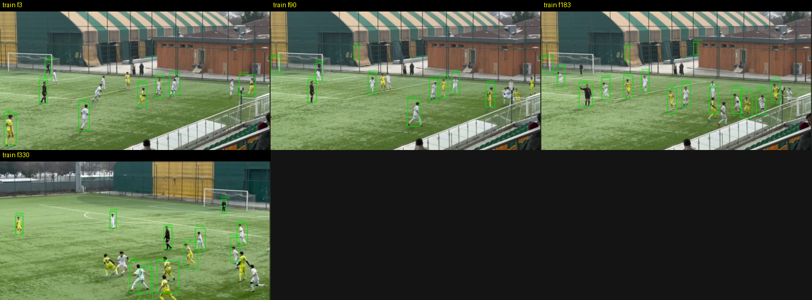
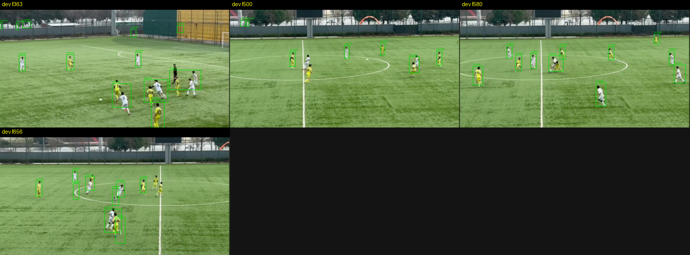
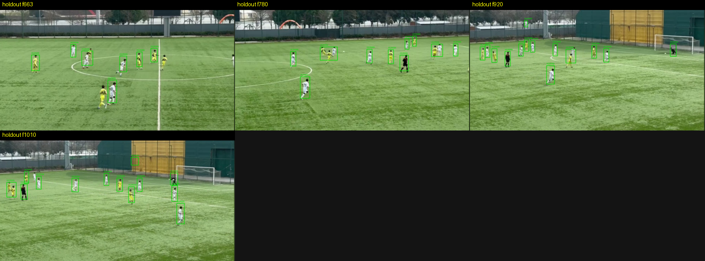
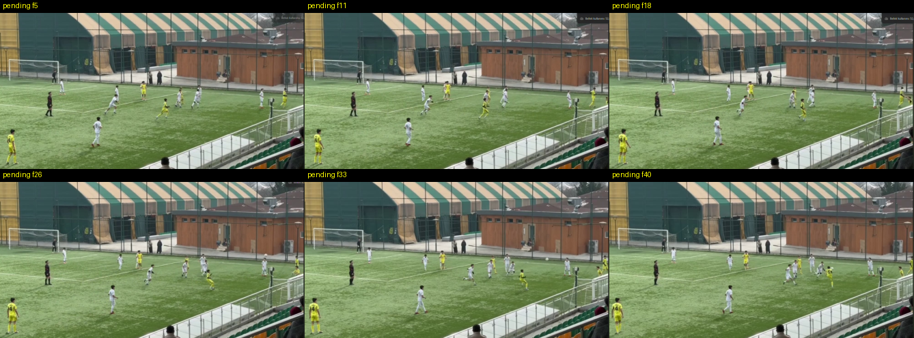
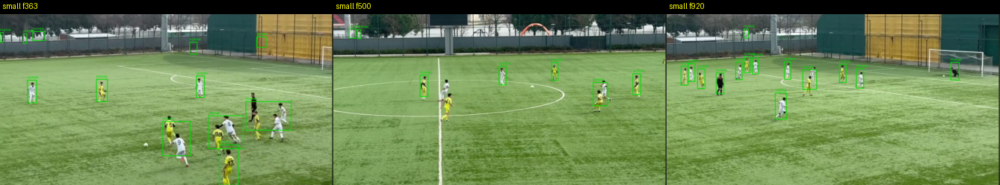
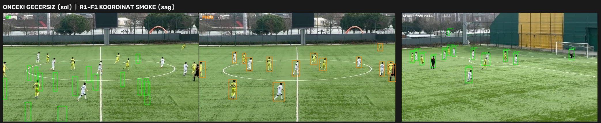

R1-F1 Blind GT Draft Review Package
Bu paket model prediction içermez. Kutular yalnız blind GT draft / coordinate smoke doğrulamasıdır.
human_approved / GT freeze değildir. Acceptance metriği hesaplanmamıştır.
Özet
- Frames: 150 (train 54 / dev 43 / holdout 53)
- Frames with draft boxes: 12
- Positive draft boxes: 127
- Ignore: 0 · Uncertain: 0
- Incomplete (needs human review): 150
- Provenance: agent_blind_reviewed_draft
- Coordinate root cause: {"primary": "agent_hallucinated_bbox_coordinates_without_pixel_grounding", "category": "annotation_generation_integrity_not_affine_transform_bug", "summary": "Failed R1 blind boxes were emitted as sou
- Auto QA empty-turf center rate: 0.023622047244094488
Proof video
Contact sheets
Start

Middle

Holdout

Negative / pending

Difficult

Coordinate before/after
